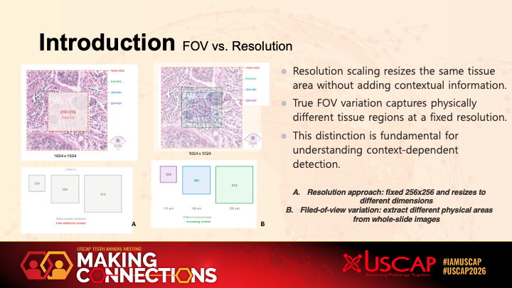
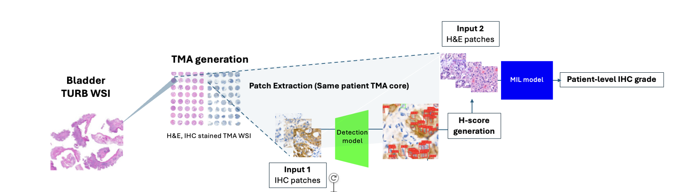
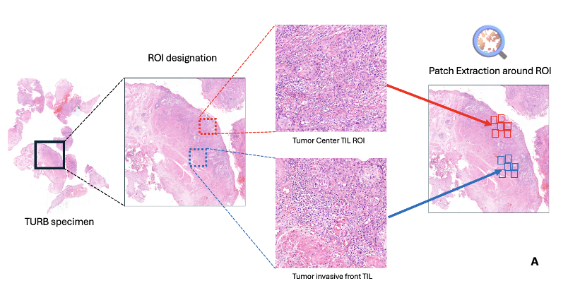
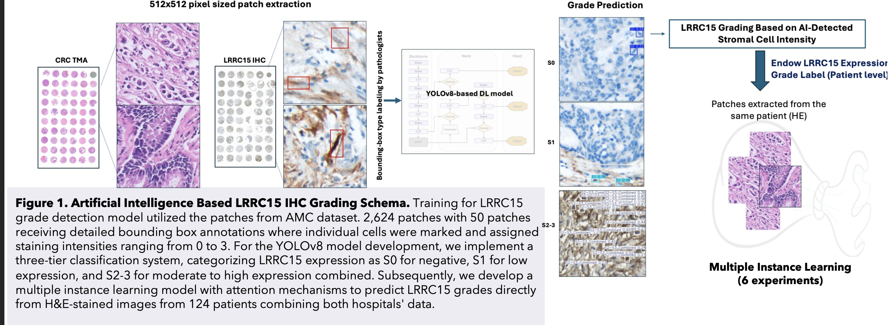
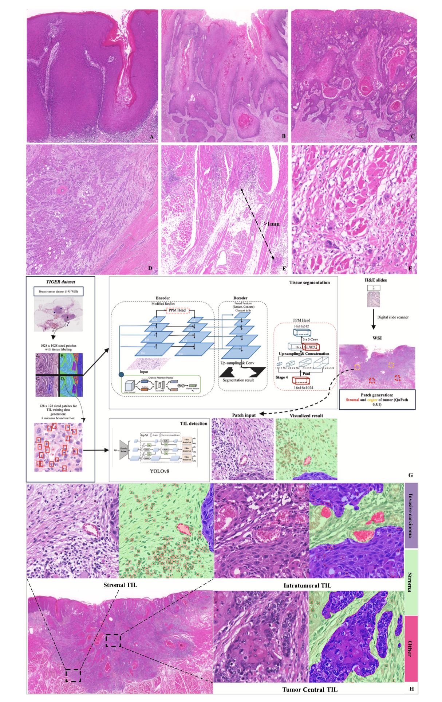
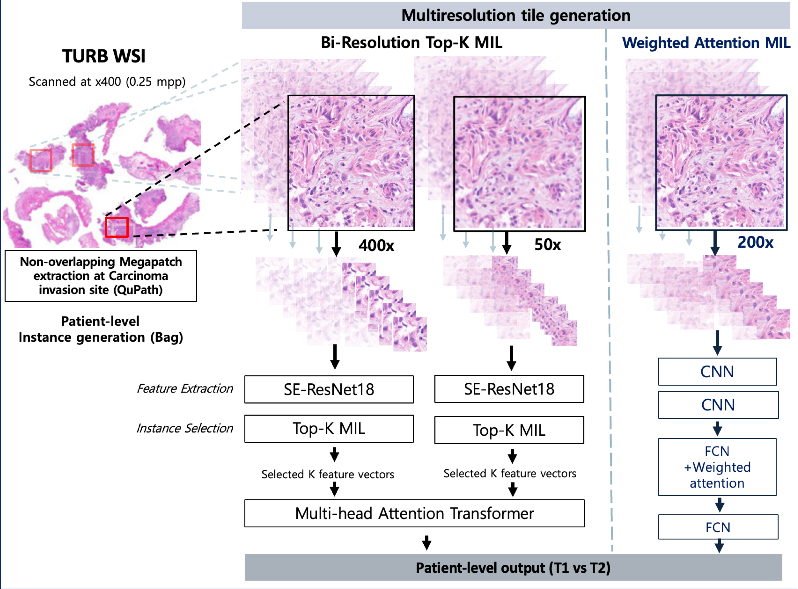
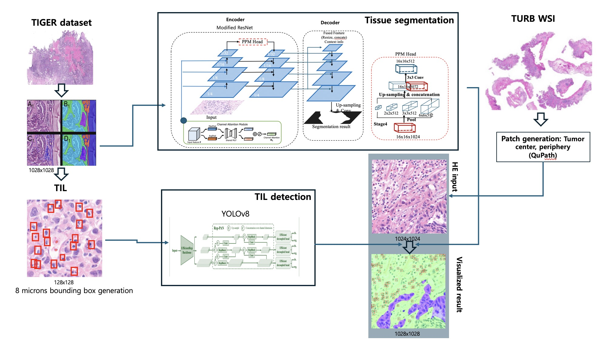
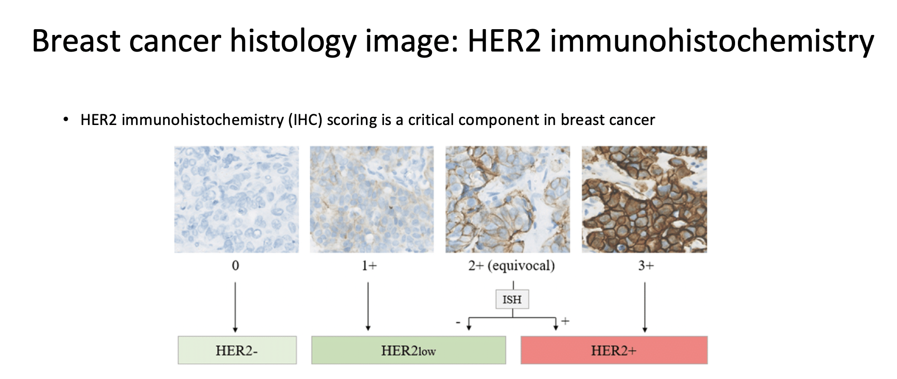
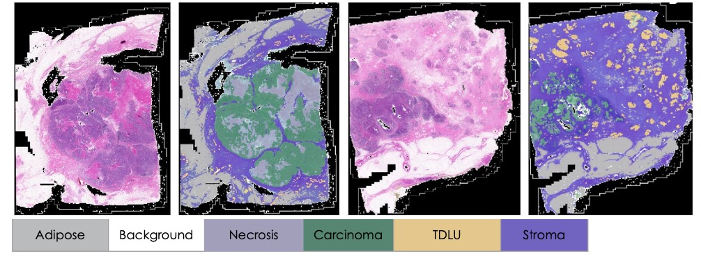
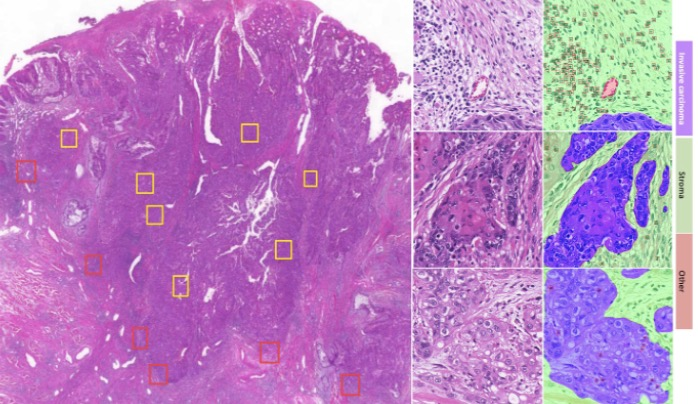

M.S. in Computer Science, University of Rochester (Rochester, NY, USA)
Incoming Graduate Research Assistant, Lab of Prof. Sean Crowell (Fall 2026)
I build machine learning methods that hold up when the deployment hospital, scanner, or instrument is not the one the model was trained on. My work spans cross-hospital adaptation of pathology foundation models, weakly supervised prognostic modeling on whole-slide images, and structured prediction with language models for clinical text.
I started in computational pathology during my PhD in Medicine, then entered the Department of Brain and Cognitive Engineering at Korea University to begin a full-time engineering career. I am applying to CS PhD programs for Fall 2027, with interests in domain shift, out-of-distribution generalization, and continual learning.
I design and implement deep learning models for learning from indirect and weakly supervised signals under real-world data variability.
I completed graduate coursework in Computer Vision, Artificial Intelligence, and Machine Learning at Korea University with a perfect GPA (4.5/4.5). My implementations and related resources are available on my GitHub, accessible via the links above, or upon request.
Note: I publish under both "Jongwon Lee" and "Jongwoon Lee". Both names represent the same Korean characters (이종원) but reflect different romanization conventions.
Submitted to AAAI-27. A two-stage pipeline that converts free-text EMG/NCS studies into structured diagnostic slots and back into natural-language reports, composing six domain-specialist models through a rule-based arbiter.
CLINICCAI at MICCAI 2026, Strasbourg, France — Poster, September 2026. Label-free adaptation of frozen pathology foundation models across three hospital cohorts.
Laboratory Investigation, 2026.
Laboratory Investigation, 2026.

USCAP 2026, Texas, USA — Platform Presentation

USCAP 2026, Texas, USA — Poster Presentation

USCAP 2026, Texas, USA — Poster Presentation

ECP 2025 — 🏆 First Best Poster Prize

Oral Oncology, August 2025

USCAP 2025: Employing attention-based MIL techniques for Megapatch Classification of pT Category of Bladder Cancer with TURB specimens.

ASDP 2025: Novel approach for predicting bladder cancer recurrence using weakly supervised learning on transurethral resection specimens.

KSP 2023: Comparative analysis of Vision Transformer and DenseNet-201 architectures for automated HER2 scoring in breast cancer specimens.

Breast Cancer Research 2024: Comprehensive analysis of factors influencing successful patient-derived xenograft engraftment in breast cancer models.

ASCO Breakthrough 2024